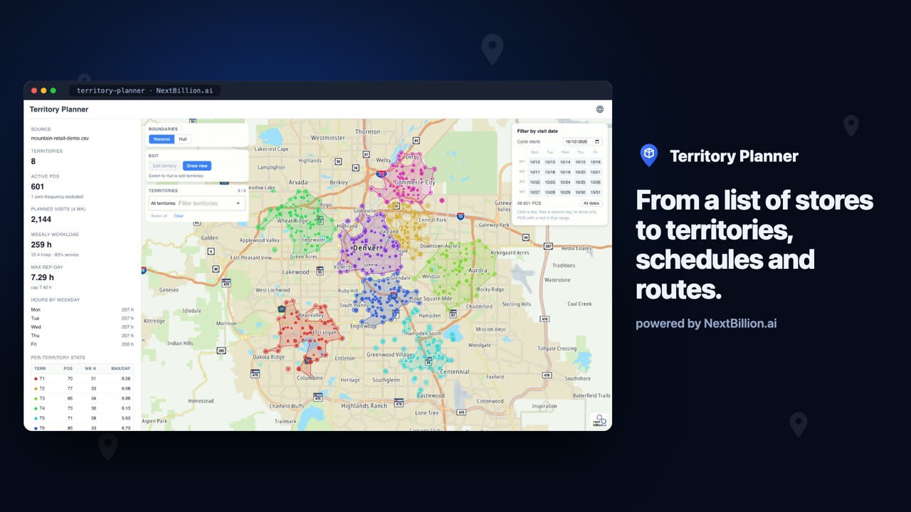

Territory Planner: balanced territories, a schedule every rep can keep
Territory Planner turns a list of points of sale into workload-balanced sales territories, a 4-week visit schedule for each rep, and an optimized driving route for any day.
- Territories balanced on weekly hours, using real road distances
- Redraw a territory on the map and recalculate the schedule
- One click from a territory day to its optimized route